你不想为你的信仰冒一下险吗？难道想等你老了，再后悔莫及吗？
0x01 nmap简介
Nmap（网络映射器）是一款用于网络发现和安全审计的网络安全工具，它是自由软件。
－－维基百科
nmap的执行原理如下：

nmap的目录结构如下：
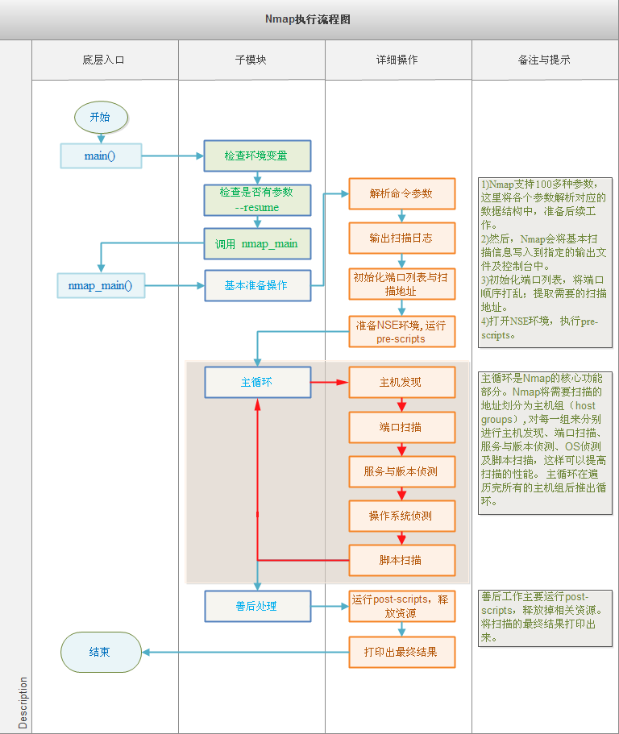
扫描的端口状态如下：
- Open(开放的): 应用程序正在这个端口上监听连接。
- losed(关闭的): 端口对探测做出了响应，但是现在没有应用程序在监听这个端口。
- Filtered(过滤的): 端口没有对探测做出响应。同时告诉我们探针可能被一些过滤器（防火墙）终止了。
- Unfiltered(未被过滤的):端口对探测做出了响应，但是Nmap无法确定它们是关闭还是开放。
- Open/Filtered: 端口被过滤或者是开放的，Nmap无法做出判断。
- Closed/Filtered: 端口被过滤或者是关闭的，Nmap无法做出判断。
TCP标志位：
- SYN(synchronous建立联机)
- ACK(acknowledgement 确认)
- PSH(push传送)
- FIN(finish结束)
- RST(reset重置)
- URG(urgent紧急)
在nmap中提供了大量的脚本文件供我们使用，脚本为lua编写的nse文件，常见的脚本用法如下：
1 | -sC: 使通用scripts生效 |
关于nmap脚本的分类可以查看官方文档：https://nmap.org/book/nse-usage.html#nse-categories
根据脚本的运行阶段不同分为四类：Prerule scripts、Host scripts、Service scripts、Postrule scripts。
0x02 lua语言
0x03 nse脚本编写
nse基本格式
我们这里使用Halcyon这个IDE先来随便打开一个nse看一下：
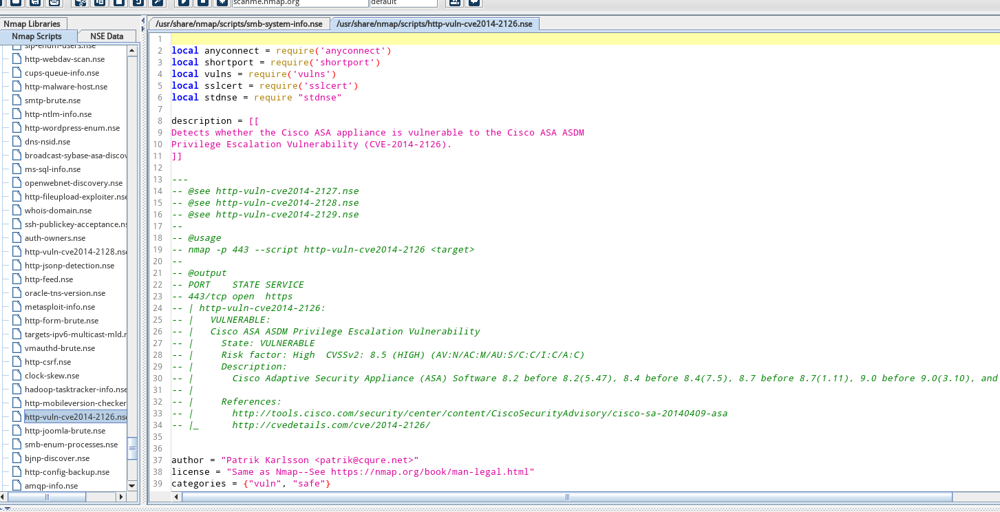
一个完整的NSE脚本通常都有这么几个部分的代码字段：
1、description：
脚本的描述。
2、catagories：
脚本的分类。nmap除了可以指定单个脚本，还能够指定一类脚本，比如default，如果没有使用–script时，默认会加载这类脚本。
3、rule：
脚本的触发规则（一般是一个lua函数，返回值只有true和false），触发脚本执行的条件会在rule字段中定义。
Nmap使用的规则是一个lua函数，用来决定是否执行脚本的action，会返回true或者false。如果返回值为true的话会执行脚本的action函数。
用来决定规则真假的通常是基于规则的类型以及传递给它的主机和端口的信息。
4、action：
脚本具体执行内容。rule触发规则为真时执行action定义的函数。
调用规则
- prerule()：
不接收参数，脚本只运行一次，在主机发现之前，发生在预扫描阶段。返回的值永远为真。 - hostrule(host)：
设定参数为目标的ip地址或主机名，nmap完成了主机发现之后再运行脚本。 - portrule(host,port)：
设定参数需要主机以及端口。在所有主机被扫描完成之后运行，每个端口运行一次，处于open，open|filtered，或者unfiltered状态的所有端口。 - postrule()：
不接收参数，nmap完成所有主机已经被扫描后，在脚本的后扫描阶段。返回的值永远为真。
官方介绍如下：
1 | hostrule和portrule运行在被主机被扫描完成之后。hostrule和portrule对应函数返回true时，都会执行一次action函数。 |
我们可以编写一个简单的脚本来进行测试：
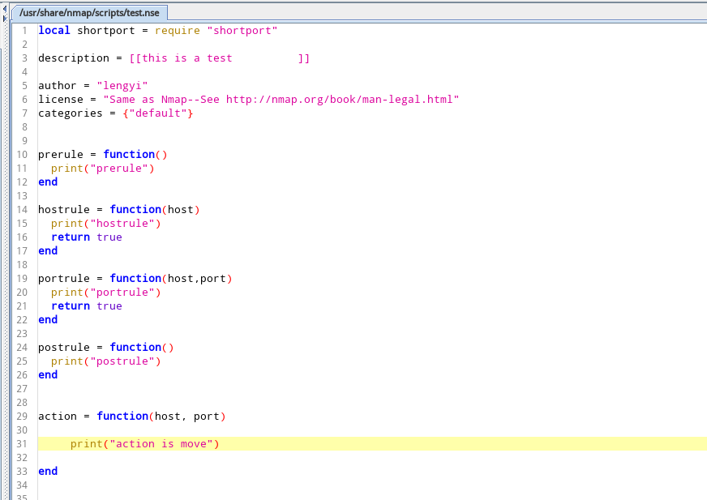
可以清楚的看到执行顺序
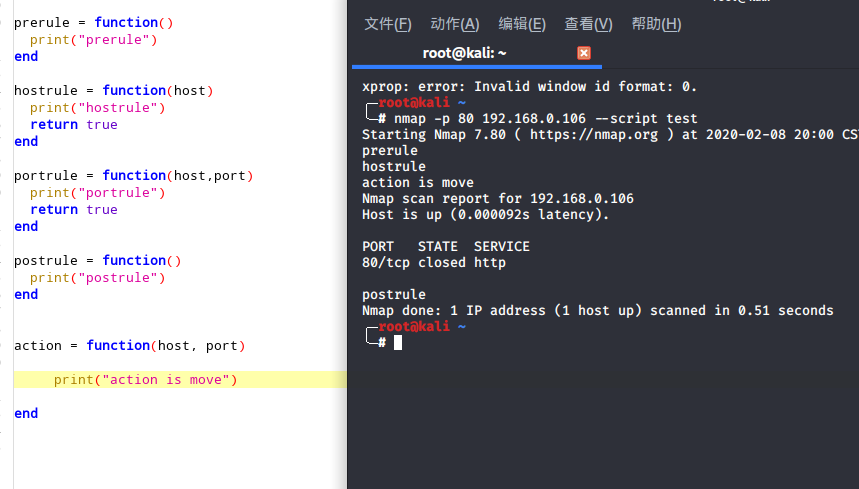
我们再通过一个小例子看一看脚本的执行流程：
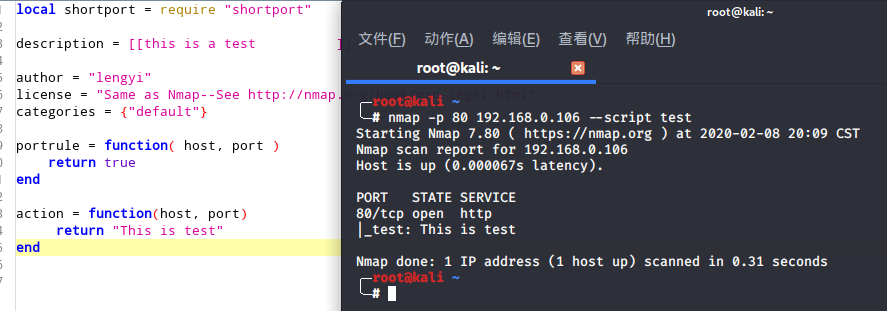
关于nmap各种库的引用可以查看（https://nmap.org/nsedoc/lib/）
比如再来编写一个demo，当80端口开放时，输出this is webserver
1 | local shortport = require "shortport" |
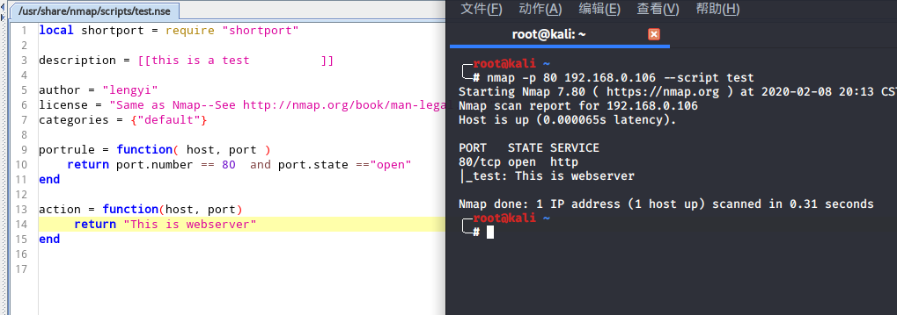
记得每次执行使用ide更新脚本
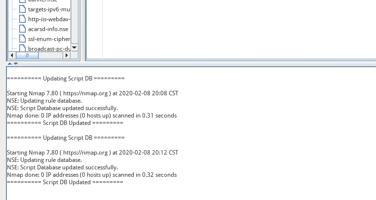
nse的api
在刚才的demo中使用了nmap自带的api，也就是判断端口开放哪里，关于api，官网也给除了详细的文档(https://nmap.org/book/nse-api.html)常用的也就是host和port这两种。
host：
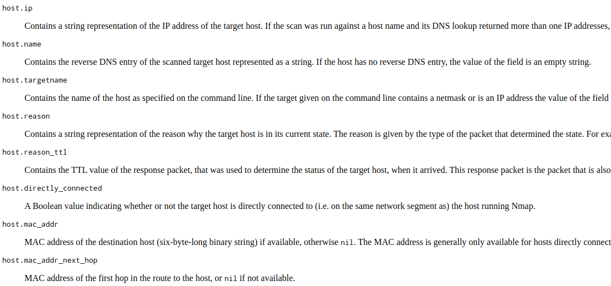
port：
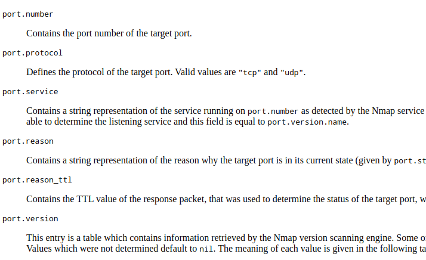
nse的库
NSE中的库文件实现了代码的分离和重构，有助于脚本的开发，其存放在nselib文件夹中。
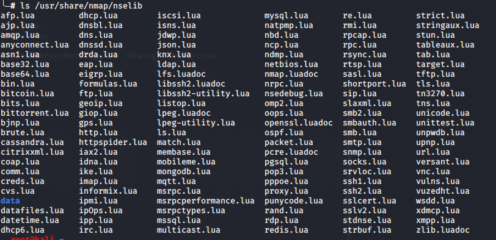
下面编写一个简单的库文件。
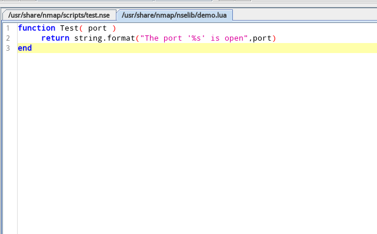
然后调用
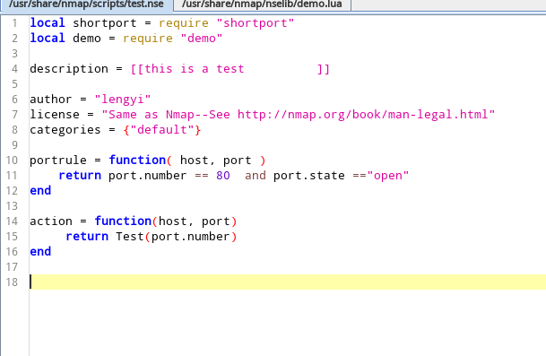
常用的函数可以使用local关键字。
运行

0x04 渗透脚本编写实战
MacCMS V10后门为例编写一个nse脚本
关于漏洞的解释请戳：https://www.uedbox.com/post/59349/
编写的思想很简单，也就是确定开启了http服务，然后访问maccms10\extend\Qcloud\Sms\Sms.php文件存在即存在，虽然有点误报的感觉…
编写这个Poc需要使用http请求，也就是需要使用我们的http库，api地址：https://nmap.org/nsedoc/lib/http.html
常见的用法：
1、get请求
get (host, port, path, options)
主机、端口、路径、其他设置（socket超时时间，HTTP头以及其他参数）
返回一个标准响应表
2、post请求
post (host, port, path, options, ignored, postdata)
主机、端口、路径、其他设置、忽略向后兼容(一般设置nil)、post数据

最后的代码：
1 | -- 引入相关库文件 |
最后的效果：
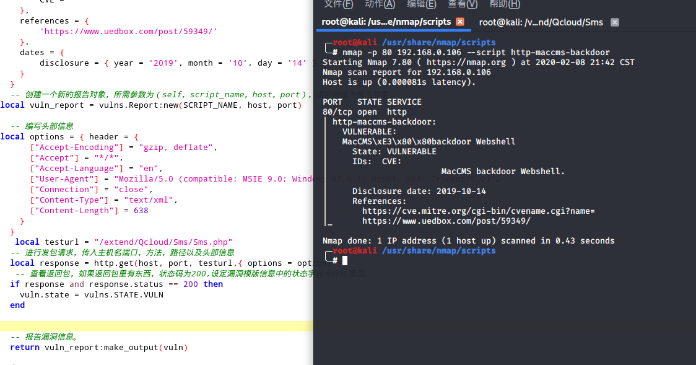
对上面漏洞信息的补充漏洞报告信息必须存放在一个表中，每个漏洞必须有其状态，state是在报告模版中必须要指定的一个字段，状态有（NOT_VULN，LIKELY_VULN，VULN，Dos，和EXPLOIT）
NOT_VULN：不存在漏洞。
LIKELY_VULN：应该存在漏洞，只是做了一个简单的对比，存在一定的误报。
VULN：被证实存在漏洞。
EXPLOIT：存在漏洞并且已经测试成功。这条状态会自动设置。
DoS：存在拒绝服务攻击，状态会被自动设置。
上方NSE脚本中，先将state字段预设置为不存在漏洞。如果存在漏洞再将字段进行修改并将其漏洞信息进行输出